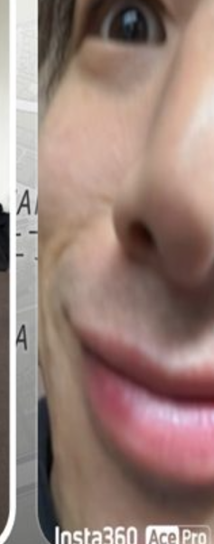
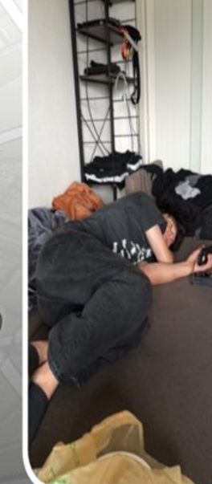
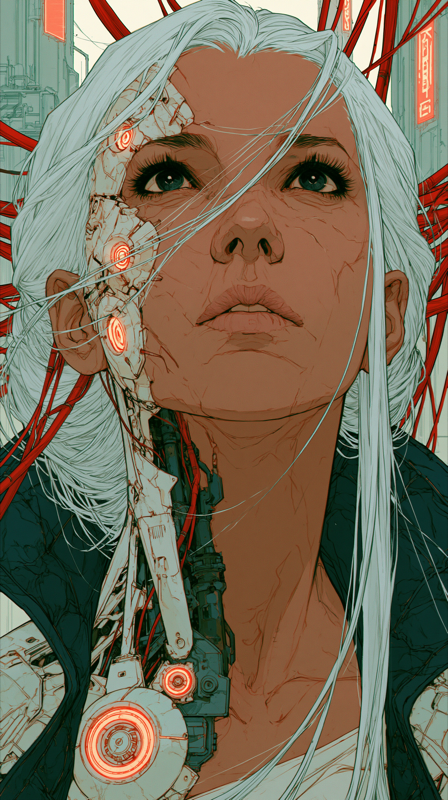
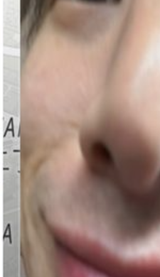

MINAMICHO南町
NAGASAKI 1-CHOME長崎一丁目
NISHI-IKEBUKURO西池袋
NAKAOCHIAI中落合三丁目
SHIMO-OCHIAI下落合
MEJIRO 2目白二丁目
TAKADANOBABA高田馬場
TAKADA高田
KITA-SHINJUKU北新宿
HYAKUNINCHŌ百人町
ŌKUBO 1大久保一丁目
SHINJUKU 7新宿七丁目
Shinjuku新宿区
NISHI-SHINJUKU西新宿
SHINJUKU 4新宿四丁目
Kōshū Kaidō 甲州街道
YOYOGI 3代々木三丁目
YOYOGI 2代々木二丁目
YOYOGI 1代々木一丁目
YOYOGI-KAMIZONOCHŌ代々木神園町
SENDAGAYA千駄ヶ谷
JINGŪMAE 1神宮前一丁目
Meiji Street 明治通り
Shibuya渋谷区
SHIBUYA渋谷
JINNAN 1神南一丁目
JINGŪMAE 6神宮前六丁目
JINGŪMAE 5神宮前五丁目
デバッグ太郎




z-order · 奥 → 手前
L0
淡い地図EarthView
MapLibre positron + globe projection、pitch 55° / zoom ~14。padding 補正でほぼ俯瞰。薄グレーに細い道路と日英ラベルが密。緑公園/青川/太道路/強パース格子は描かない。可読性は上下 scrim で担保。
L1
ピン層pinsLayer
3D オブジェクトがリング・棒・三角ナシで地図に直接乗る。role でサイズ激変（main 中心＝巨大／sub 周囲＝小）。実機は写真由来の人物 GLB だが、specimen は中立な角丸プレースホルダ（スクショ切り抜きは使わない）。default で発光ステージは出ない。
L2
chromeStory/Menu overlay
top scrim h150 · 8C→47→00 (0/.42/1) / bottom scrim h180 · 9E→00 / アカウントバッジ＝丸40＋名前のみ top48 left8 / menu+message top48 right8 · 44px gap8 / サイドツール（上に media バブル）/ 投稿＝camera 55×55。
L3
クラスタリール_ClusterReel · 主役
main クラスタ全メンバーを横スクロール。画像＋枠だけ（アバター/名前/グラデ/出典ラベルは無し）。サムネ 100×178 (9:16)、外枠 r14・内画像 clip12、padding16・gap8。代表=白2.5px / 他=α.2 1px。タップで代表昇格→中心 3D 差し替え。